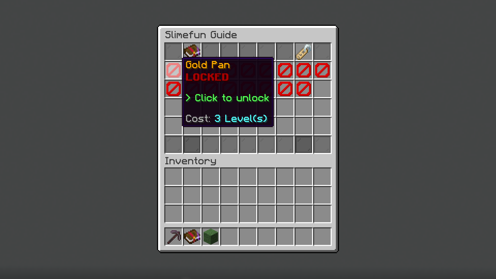
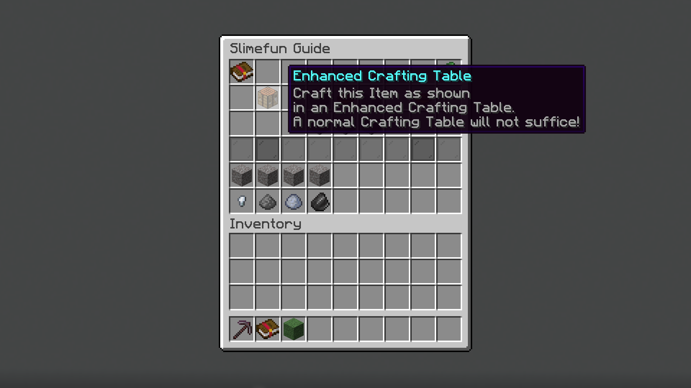
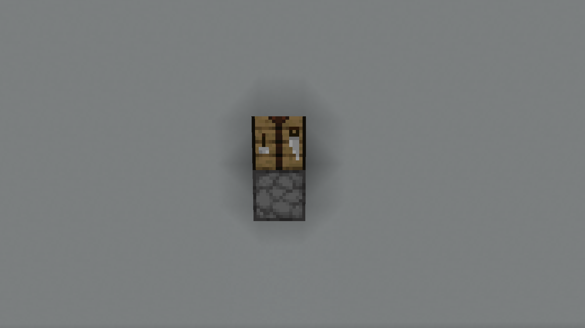
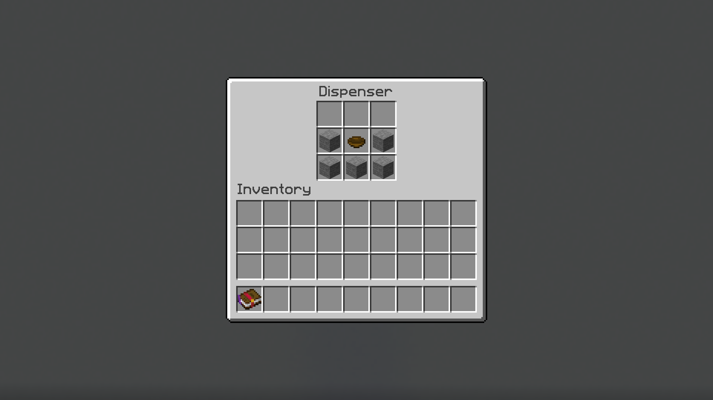
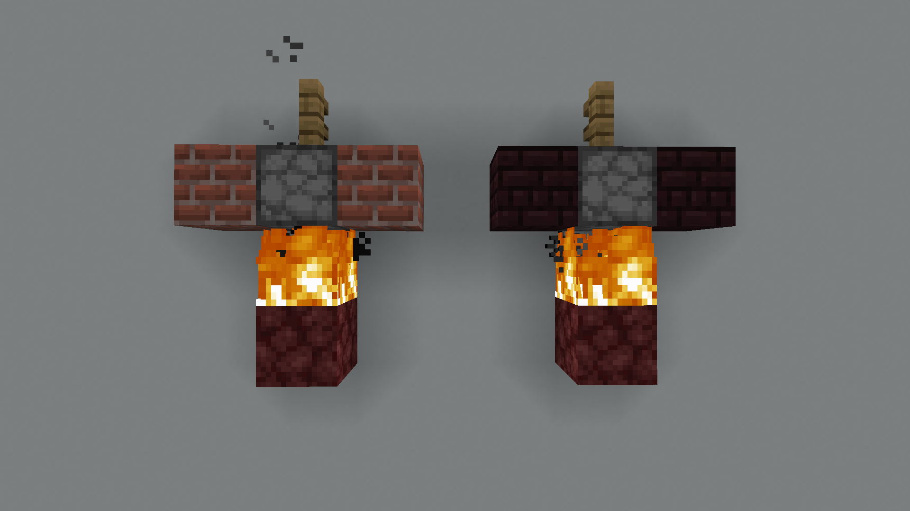

Slimefun is like a mod, but you don't need to install anything to join a server
and use it. The code runs entirely on the server. Through some clever workarounds,
Slimefun adds hundreds of new blocks and items without requiring you to install
anything. Of course, there are some disadvantages to this approach: for example,
Slimefun can't implement any new textures, although there are some unofficial
texture packs to do this. There are more bugs than you'd expect from a mod, as
sometimes the workarounds required can get quite complicated and unpredictable.
That being said, one of the main reasons that Slimefun is so appealing is because
it is very coherent. It is relatively easy to create an addon for Slimefun due to a
very comprehensive API, and as a result, Slimefun has extensive community-created
content in the form of addons. There are currently 54 addons available (full
list here)
adding everything from custom advancements to new planets to liquid alloying, and
most of them seamlessly integrate into one another, providing hundreds of hours
of coherent and interesting content.
However, Slimefun can be a bit unintuitive to get into. This is why we've put this
guide together; hopefully we'll be able to provide some direction for those of you
new to Slimefun. Before you begin, beware that Slimefun is grindy, especially early
game, and requires some substantial dedication. While it's not exactly
GTNH,
it's still quite easy to get burnt out, and I recommend that if you start feeling
frustrated or burnt out, do something else until you're feeling ready to move on again.
Go slowly, take your time, and don't forget to ask around if you're stuck with something.
Alright, enough talking. Let's jump into it.
The Slimefun Guide is a book that lets you view the recipes and functions of
various items and machines. To access the SF guide, run /sf guide, and the
guide will spawn into your inventory. Open the guide's interface by holding the
book and right clicking. Alternatively, you can open the interface by running
just /sf openguide. Once you're there, you'll see lots of icons that
indicate different categories - hover on each item to see the category name,
and click the item to enter the category. You can also navigate between pages
of categories using the two black/lime glass panes at the bottom of the guide.
Once you're inside a category, you'll instantly be greeted with a wall of barriers.
Each barrier indicates a specific item, but you won't be able to craft any of the
items yet because they must be unlocked. The name of the item will be shown when
you hover over its corresponding barrier. Every item needs a different number of XP
levels to unlock, which are indicated when you hover over it. To unlock an item,
left click it. Try unlocking the Gold Pan in
the Tools category.

PS: You can also view recipes for items within recipes. For example, if you click on
the stone while viewing the Gold Pan recipe,
the guide will show you the recipe for making stone. This will be really useful later
on when we're dealing with recipes with tens of layers of crafting to them!
Now we're ready to try and craft a Gold Pan.
However, you can't just craft Slimefun items in a regular crafting table: you'll
need to build special structures known as 'multiblocks' to craft them. For example,
if you click on the Gold Pan and hover over the
crafting table, you'll see that the required multiblock for crafting a
Gold Pan is an
Enhanced Crafting Table.

Multiblocks are unique machines that must be built by placing blocks down instead
of being crafted. All multiblocks have their build recipes shown in the guide. Try
navigating to the Enhanced Crafting Table under
Basic Machines and looking at the recipe. Here's
what the recipe corresponds to when built in-world:

Try building this, and verify that you've constructed it correctly by right clicking the
Crafting Table. A message should appear in chat
telling you that the machine inventory is empty. Now let's craft the
Gold Pan. Navigate to the
Gold Pan in the Slimefun Guide (under
Basic Machines) and have a look at its recipe.
Now we'll need to place the recipe inside the dispenser, like this:

Now right click the crafting table. A Gold Pan
should have appeared in the dispenser. Congratulations, you've crafted your first
Slimefun item! I recommend you have a look around the guide and find some other
useful items to craft. Keep in mind that a lot of machines and items will require
components that you can't craft yet!
And now, the masochism begins.
To advance from the stone age (and to start building electric machines), you're going to
need to learn how to create metals and alloys. For this, we're going to need to build a
Smeltery from Basic Machines.
Go ahead and build one using the guide, and note that you need to have a fire underneath the
dispenser. Netherrack will be useful here to make sure that said fire doesn't go out
(though note that the fire will go out after you've processed a few recipe). If you don't have
Nether Bricks or Netherrack
yet, you can build a Makeshift Smeltery instead for now.

Okay, now we're going to need to collect some dusts to alloy with. Dusts form the foundation
of metallurgy in Slimefun. To collect dusts, you'll need to hold that
Gold Pan you made earlier in your hand, and right click
gravel with it. You'll receive Clay,
Flint, Iron Nuggets, and
occasionally, Sifted Ore. Once you've collected at least
half a stack of sifted ore (you're going to need stacks upon stacks upon stacks of it in the
future), we're going to need to wash the Sifted Ore into dusts.
To do this we'll need another multiblock: the Ore Washer.
Construct an Ore Washer, and place the
Sifted Ore into the dispenser. Right click the fence to
process the Sifted Ore into dusts. In the case of copper, iron,
and gold dust, you'll be able to use an Ore Crusher to convert
ore directly into dust at a 1:2 ratio.
Now that we know how to make dusts, we can start doing some metallurgy. The first thing to know
is that you can convert dusts into ingots by placing dust into a Smeltery
and right clicking the fence above the dispenser. Slimefun has an ingot equivalent for each dust (apart
from iron and gold). Note that Slimefun actually implements Copper Ingots
separately from the vanilla Copper Ingots. This is largely
due to historic reasons, as Slimefun already implemented its own
Copper Ingots prior to them being added to vanilla, and
switching to using the vanilla ingots would be very difficult at this point.
Secondly, you can combine multiple metals to create an alloy. Try making some
Nickel to practice. Nickel can be
found in the Resources section. It'll soon become apparent that
you're going to need to make a lot of nickel, and in fact you will spend a lot of time
collecting dust and alloying early game. In mid game, you'll be able to automate dust production
and alloying completely, but for now you're stuck with doing it manually.